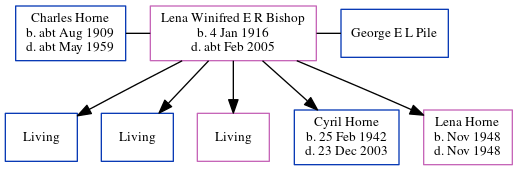

Lena Pile (née Bishop) 1916 - c2005
[ Home ] | [ Calendar ] | [ Surnames Index ] | [ Errors ] | [ Family History ]Lena Bishop, the wife of Charles Isaac Horne (the first cousin once-removed on the father's side of Nigel Horne), was born in Elham, Kent, England on 4 Jan 19161,2 and was married twice - to Charles Horne (c. Nov 1934 in Thanet, Kent, England) George E L Pile (in 1965 in Ashford, Kent, England, following the death of Charles Isaac c. May 1959)3. She had 5 children with Charles Horne: Michael C, Bernard D, Patricia B, Cyril Francis and Lena Winifred.
She died c. Feb 2005 in Kent2.
Children
- Cyril Francis was born on 25 Feb 1942
- Lena Winifred was born in Nov 1948
Citations
- England & Wales births 1837-2006 - Findmypast
- England & Wales deaths 1837-2007 - Findmypast
- England & Wales, Marriage Index: 1916-2005 Online publication - Provo, UT, USA: The Generations Network, Inc., 2009.Original data - General Register Office. England and Wales Civil Registration Indexes. London, England: General Register Office. © Crown copyright. Published by permission of the Cont
Media
England & Wales marriages 1837-2008 Transcription - BMD-M-1934-4-AZ-000109-053
England & Wales marriages 1837-2008 Transcription - BMD-M-1934-4-AZ-000622-041
UK electoral registers 2002-2014 Transcription - 192-PILE-LENA-TN26-2737222089
England & Wales deaths 1837-2007 Transcription - BMD-D-2005-3-86206243
England & Wales deaths 1837-2007 Transcription - BMD-D-2005-3-86378509
England & Wales Births 1837-2006 - BMD-B-1916-1-AZ-000117-029
Family Tree
Map
Generated by ged2site. Last updated on Jul 3, 2024
Known Issues
No records of living with anyone
1939 UK register information missing